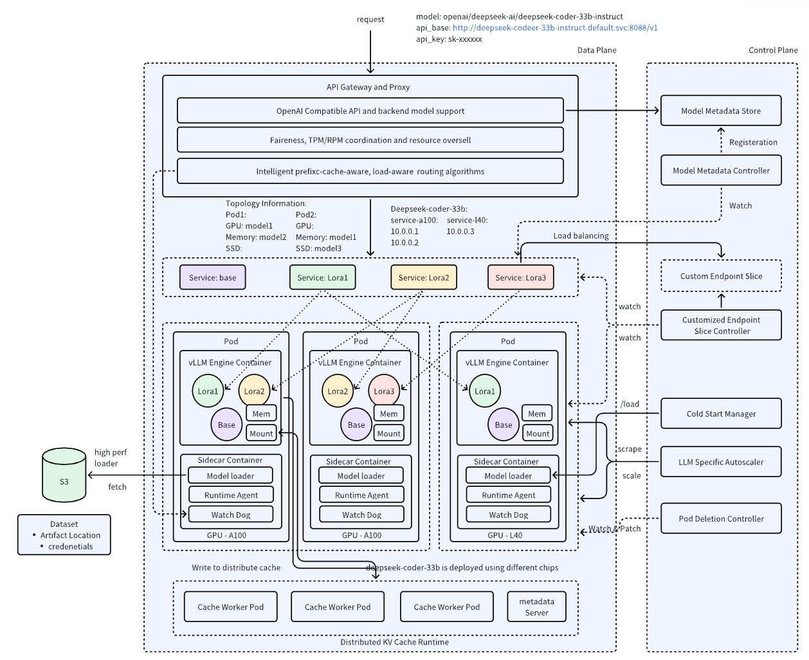
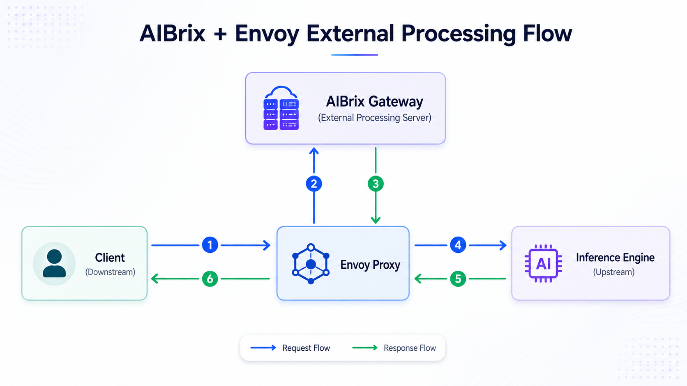

在很多生产链路里，请求会先经过 Envoy，再进入 AIBrix，最后才落到 vLLM / PyMotor 一类推理引擎。 初学者最容易把二者当成「两个差不多的网关」。更准确的心智模型是： Envoy 负责把网络做成可靠、可观测、可配置的管道；AIBrix 负责让这条管道听得懂推理语义 ——模型名、KV 占用、前缀缓存命中、Prefill/Decode 分离、SLO 等。
本文按「先通用、再专用、再叠在一起」的顺序展开，材料主要来自 Envoy 官方文档、 AIBrix Architecture、 AIBrix Router， 以及 vLLM Blog 的 AIBrix 发布说明。
L7 代理：透明网络、Filter Chain、负载均衡。
K8s 上的 LLM 控制面：路由、扩缩容、KV、LoRA。
Envoy 做数据面，AIBrix Router 做推理决策。
能在真实架构图里分清入口、调度与引擎。
一、Envoy 是什么：让网络对应用透明
Envoy 官方开篇写得很清楚：它是为大服务架构设计的 L7 proxy and communication bus。 核心理念不是「再做一个 Nginx」，而是——
为了做到这一点，Envoy 选择 out-of-process：以独立进程跑在应用旁边（或集群边缘）， 而不是把代理逻辑塞进某个语言的 SDK。好处有两条：
- 语言无关：Java / Go / Python / C++ 都能共用同一套网格能力。
- 可独立升级：不用跟着每个业务服务发版，就能升级重试、熔断、观测能力。
它实际在管什么
可以把 Envoy 想成「带插件链的高性能转发器」。官方强调的几层能力，正好对应一次请求会经过的路径：
| 能力层 | 在干什么 | 对 LLM 服务意味着什么 |
|---|---|---|
| L3/L4 Filter | TCP/UDP 连接级处理：代理、限连、TLS 等 | 入口安全、连接治理，还不懂 HTTP body |
| HTTP L7 Filter | 按 path / host / header 路由、缓冲、限流 | 能按 /v1/chat/completions 分流，但仍不懂 KV |
| HTTP/2 · HTTP/3 · gRPC | 多路复用、长连接、协议转换 | 流式 token 回传非常依赖这条能力 |
| 服务发现 · 健康检查 · LB | 动态上游、主动/被动健康、重试与熔断 | 实例上下线时流量不至于「瞎打」 |
| 可观测性 | stats、分布式追踪、admin 端口 | TTFT 里「网关耗时」有据可查 |
官方文档 Life of a Request 把这件事拆成两块： Listener subsystem（管下游请求生命周期）与 Cluster subsystem（管上游 endpoint 选择、健康检查、负载均衡、连接池）。 对 LLM 服务来说，这意味着：只要后端还是「一堆 HTTP 端口」，Envoy 就能把流量接稳、转稳、可观测； 但「该打到哪个带前缀缓存的副本」——这已经超出通用代理的默认语义。
二、AIBrix 是什么：为 vLLM 规模化而生的控制面
AIBrix 由字节跳动开源，现挂在 vLLM 项目组织下。vLLM Blog 的定位很直白： vLLM 让单实例推理变简单，但规模化部署仍卡在路由、扩缩容与容错； AIBrix 提供一组可插拔的云原生积木，专门补这块。
官方 Architecture 文档把组件分成 Control Plane 与 Data Plane：
| 平面 | 代表组件 | 解决的问题 |
|---|---|---|
| Control Plane | LoRA Controller、RayClusterFleet、LLM Autoscaler、GPU Optimizer、AI Runtime Sidecar | 模型/适配器注册、多机编排、按 KV 等推理指标扩缩、异构成本优化、故障诊断 |
| Data Plane | Request Router、Distributed KV Cache Runtime | 公平性 / TPM·RPM、工作负载隔离、跨节点 KV 复用 |

和「再包一层 HTTP 网关」不同，AIBrix 的关键词是 system × inference engine co-design： 扩缩容看 KV 利用率，路由看前缀缓存与负载，异构 GPU 用 profiler 做成本优化。 这也是它和通用 KServe / 纯 Ingress 方案拉开差距的地方—— 它从第一天就按 LLM 工作负载设计，而不是把普通微服务网关硬套过来。
三、关键叠层：AIBrix Router 如何扩展 Envoy
官方 Router 文档写得很明确：AIBrix Router 被设计成 Envoy Gateway 的扩展（via external processing hooks）， 作为全部 LLM 推理请求的单一入口。换句话说：
Client
→ Envoy（接流量、跑 Filter、做协议与连接治理）
→ GatewayPlugin / Router（查本地缓存的 pod 指标与 KV 状态，做选路）
→ Inference Pod（vLLM 等）
设计上的一个关键点：Router 高频本地缓存 pod 指标（周期性拉取 / 订阅）， 热路径上尽量不阻塞去「现场问」每个 pod。这样既能做多目标路由，又能撑到很高的 QPS。
Router 会「看」哪些东西
官方内置策略可以粗分成几类（完整列表见 Router 文档）：
- 通用负载：
least-request、least-latency、power-of-two… - KV / 缓存感知：
prefix-cache、least-kv-cache、prefix-cache-preble - 公平性：如
vtc-basic（按用户 token 公平与利用率折中） - SLO 感知：
slo、slo-least-load等 - 专用形态：
pd（Prefill/Decode 分离路由）、session-affinity
策略可以全局配置（环境变量 ROUTING_ALGORITHM），也可以按请求头
routing-strategy 覆盖。这正是「通用代理」做不到、而 LLM 网关必须做到的灵活性：
同一条 HTTP 入口，可以按业务目标切换调度哲学。
四、对照表：什么时候想到谁
| 问题 | 更靠近 Envoy | 更靠近 AIBrix |
|---|---|---|
| TLS 终结、HTTP/2 流式、连接池 | 是 | 依赖 Envoy 能力 |
| 按 path / host 做普通分流 | 是 | 可叠加更细策略 |
| 按前缀缓存命中选 pod | 否（默认不知 KV） | 是（prefix-cache 等） |
| 按 KV 利用率做秒级扩缩 | 否 | 是（LLM Autoscaler） |
| 多 LoRA / 异构 GPU 成本优化 | 否 | 是（控制面组件） |
| PD 分离后把请求拆到 P/D 池 | 只能做粗分流 | pd 等策略直接支持 |
五、回到真实架构图：怎么读入口层
很多生产图会长成这样：
业务平台
→ Envoy
→ AIBrix 网关
→ 调度 / KV Conductor
→ vLLM Prefill / Decode读图时建议按三层拆：
- 接入层（Envoy）：流量怎么进来、协议与连接是否健康——对应 TTFT 里的「网络传输」。
- 推理网关层（AIBrix）：这份请求该去哪个模型、哪个副本、哪种路由策略——对应「网关处理」。
- 引擎与资源层：真正 Prefill / Decode、KV 分配与传输——才是算力和显存开销大头。
六、小结
- Envoy：CNCF 生态里的通用 L7 代理；目标是网络透明、可观测、可治理。
- AIBrix：面向 LLM（尤其 vLLM）的云原生控制面 + 推理网关；路由、扩缩、KV、LoRA 都按推理语义设计。
- 关系：AIBrix Router 扩展 Envoy Gateway；Envoy 管「怎么传」，AIBrix 管「传到哪更聪明」。
- 读图：把入口层从引擎层拆开，TTFT 才拆得动，优化才找得到杠杆。
参考与扩展阅读
- What is Envoy — Envoy Documentation 官方定义、out-of-process、L3/L4 与 HTTP L7 Filter、可观测性目标。
- Life of a Request — Envoy Documentation Listener / Cluster 子系统与一次请求的完整生命周期。
- AIBrix Architecture 控制面与数据面组件总览（含官方架构图）。
- AIBrix Router Envoy Gateway 扩展方式、路由策略清单与插件接口。
- Introducing AIBrix — vLLM Blog 发布背景：规模化 vLLM 的路由、扩缩与容错缺口。
- vllm-project/aibrix 源码与 issue；可对照 Gateway Plugin / Router 实现。
- A Look at AIBrix — The New Stack 产业视角综述：基于 Envoy 的 LLM API Gateway 与智能路由。
- Envoy Gateway Concepts 控制面如何把 Gateway API 编译成 Envoy 数据面配置。
Discussion